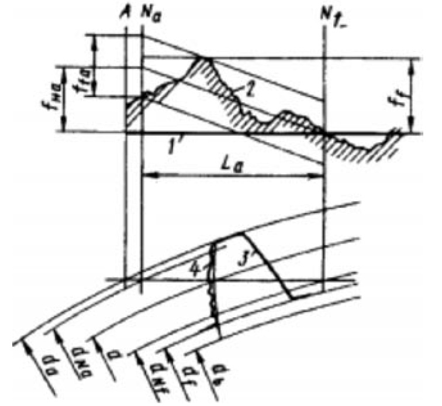

Влияние погрешностей профиля зуба на нагрузочную способность зубчатого колеса
Повышение надежности зубчатых колес — это комплексная проблема, которая должна решаться на
всех стадиях их изготовления. Технологическии процесс изготовления высоконагруженных
поверхностно упрочненных зубчатых колес включает в себя следующие операции: получение
заготовки, термобработку, черновую обработку заготовки, чистовую обработку заготовки,
подготовку баз для зубонарезания, нарезание зубьев черновое и чистовое при модуле более 5 с
промежуточной
нормализацией
и шлифованием базовой поверхности),
химико-термическую обработку, шлифование базовых поверхностей, шлифование рабочих поверхностей зуба и окончательный
низкий отпуск после шлифования.
Погрешности изготовления зубчатых колес приводят к повышению динамических нагрузок, вибрации,
шуму передач и преждевременному выходу из строя. Надежность зубчатых колес закладывается на
стадии их нарезания. Возможная погрешность изготовления на этом этапе усугубляется в процессе
высокотемпературной химико-термической обработки, поэтому качеству и точности нарезания
зубчатых колес необходимо уделять особое внимание.
ГОСТ 1643-81 насчитывает 15 параметров точности зубчатого колёса, разделённых на четыре нормы
точности: кинематической точности, плавности работы, контакта зубьев бокового зазора.
Погрешность профиля зуба, которую мы рассмотрим в данной статтье, относится к нормам плавности
работы.

Погрешность профиля зуба ffr - это расстояние по нормали между двумя ближайшими
друг к другу номинальными торцовыми профилями зуба, между которыми размещается действительный
торцовый активный профиль зуба зубчатого колеса. Погрешность профиля измеряют с помощью
эвольвентомеров или измерительных центров.
Зубоизмерительные центры могут оценивают профиль зуба по трем составляющим:
-
отклонения угла профиля fHa - это отклонения угла профиля, не зависящие от
отклонений формы профиля.
-
отклонения формы профиля Ffa - это отклонения формы профиля, не зависящие от
отклонений угла профиля.
-
полное отклонение профиля Fa представляет собой взаимное наложение отклонений
угла и формы профиля.
Рассмотрим погрешности формы зуба, которые на практике онаруживаются при измерении.
Утончение головки.
Такая погрешность может быть следствием:
-
Неправильной заточки фрезы. На фрезе после переточки образовался положительный передний
угол. В результате зуб фрезы увеличивается к наружному диаметру, соответственно уменьшая зуб
детали;
-
Неправильной установки угла поворота головки
зубофрезерного станка;
- Применения некачественной фрезы.
Увеличения головки зуба.
Причиной могут быть:
-
Неправильная заточка фрезы. На фрезе после переточки образовался негативный передний угол. В
результате зуб фрезы уменьшается к наружному диаметру, соответственно увеличивая зуб детали;
- Неправильная установка угла поворота головки фрезерного станка;
- Червячная фреза общего неудовлетворительного качества.
Наклонная форма профиля зуба.
Основными причинами этой погрешности являются:
-
Неправильная заточка фрезы.
Червячная фреза
переточена с погрешностью шага винтовой канавки, что приводит одновременно к наклону профиля
и изменению размера при передвижке фрезы.
Равномерная волна.
Это говорит о следующем:
-
Биение фрезы на оправке. Может быть вызвано некачественной фрезой, поврежденной оправкой, а
также загрязнением оправки при монтаже;
-
Неправильная заточка фрезы. фреза была переточена с радиальным биением из-за установки с
перекосом на оправку или самой оправки на станок;
- Имеет место слабо закрепленная или изношенная оправка в противоопоре станка;
- Слишком большой люфт шпинделя фрезы зубофрезерного станка;
- Большой люфт стола зубофрезерного станка.
Неравномерная волна.
Наиболее вероятными причинами образования такой погрешности является:
- слабо закрепленная или изношенная оправка в противоопоре станка;
- слишком большой люфт шпинделя фрезы станка;
- слишком большой люфт стола зубофрезерного станка;
-
общее неудовлетворительное состояние
зубофрезерного станка;
- ошибки шага заходов многозаходной фрезы;
- погрешности ходового винта или подшипников ходового винта станка.